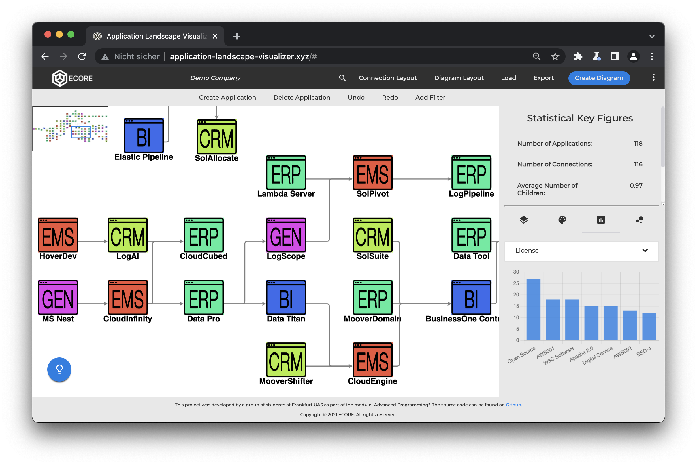

Application Landscape Visualizer.
The Application Landscape Visualizer is a JavaScript web application that was created by 5 fellow
students and me as part of the module “Advanced Programming” in spring 2021. It is a
prototype for an application that enables companies to visualize and analyze their application
landscape.
Click here to test out a demo version of the
project. Click on ‘Load’ to load a demo diagram and explore the possibilities of our
tool. It is a desktop tool and not really mobile friendly.
The Application Landscape Visualizer is used to analyze and manage such complex application landscapes.
This can be done by adding, deleting or editing applications in a simple and intuitive way. Furthermore,
applications can be set in relation to each other to display hierarchical structures. To keep a better
overview, there are many graphical functions. The applications can be organized according to different
layout types, the connections can be displayed differently, and the applications can be colored
according to different attributes.
The graphs can be analyzed to obtain more detailed insights about the hierarchies. Single applications
can be isolated and their predecessors and descendants can be explored. In this way, dependencies
between applications can be identified and acted upon.
By using histograms and heat maps, the data can be observed from different views. This makes it possible
to analyze attributes across applications and identify patterns.
The Application Landscape Visualizer is a full-stack web application. That means the software runs
platform independent in any browser. The software can also be operated on larger mobile devices such as
tablets through adding gesture control.
The code for the project can be found on my GitHub.

What it does.
The program allows the user to create applications and assign them metadata such as technical owner, start and shutdown date and some more. The attributes listed are of course for illustration purposes only and to demonstrate other functions such as filtering. Other meta attributes can be implemented with simplicity. The available cover all common data types: string values (license), lists (tags), numeric values (version) date values (shutdown date).
Basic features include:
- The creation of applications
- The creation of connections using drag and drop
- Manually moving applications and applying an auto layout according to different algorithms.
- Changing the connection style
- Exporting the diagram as PNG or SVG
- Saving and loading diagrams to the cloud database (only limited in the public web version)
Users can create filters that cover one or more values (even of different attributes). Any number of filters can be created. They can be combined among each other and also deactivated and then reactivated.
Users can perform coloring of the applications. Any attribute from the metadata can be selected as a source. As an example, here is shown how the coloring of the attribute ‘Technical Owner’ looks like in our demo landscape:
It is also possible to apply a color gradient to a quantitative attribute:

It is further possible to isolate a single node and explore the graph from there by showing parent/child nodes.

Working with a large graph it is useful to see which applications are predecessors or descendants of a certain other application. This can be easily accomplished by adding a color to all parent and child nodes:

The histogram can show the distribution of an attribute e.g. the ‘Technical Owner’. It is then shown how many applications have which technical owner. In addition, graph properties can also be shown as a histogram, e.g. the number of inputs to a node.

There are a lot of additional features that can be tried out in the web version.